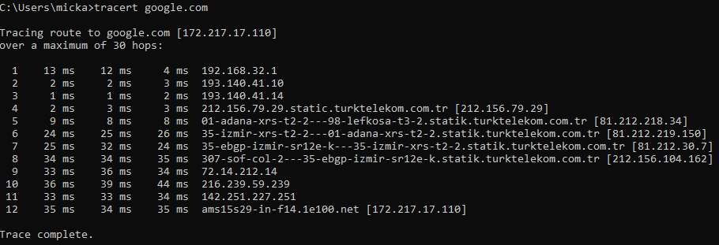
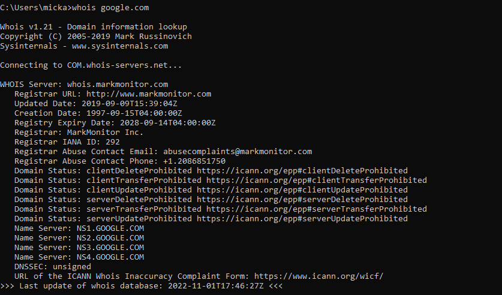
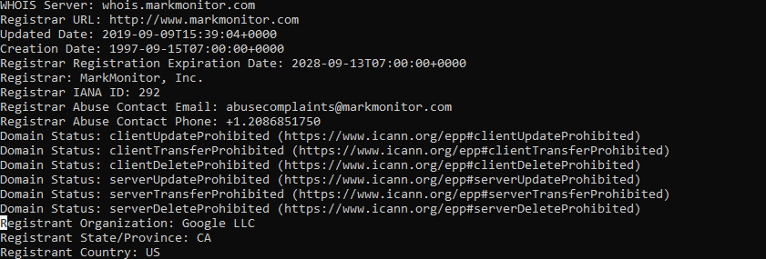
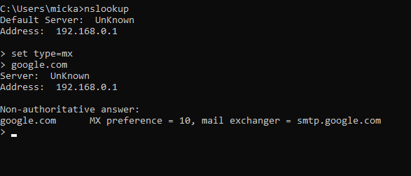
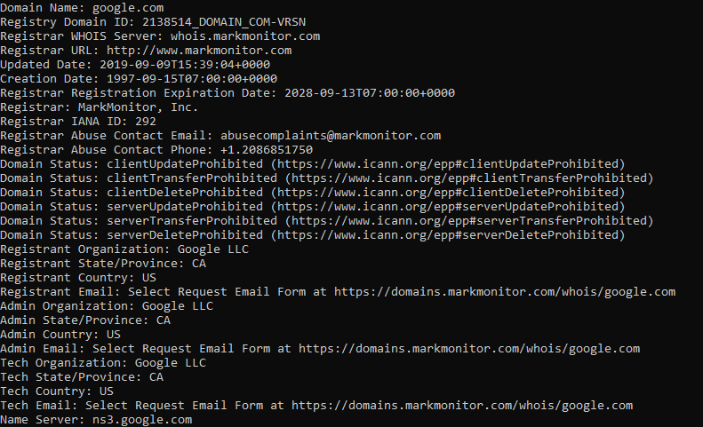
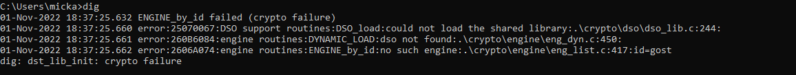

Scanning Activity: Questions
- How many hops from your machine to your assigned website?
I experimented on google.com 12 hops

- Which step causes the biggest delay in the route?
216.239.59.239 and the average time for it is 44 ms
- What are the main name servers for the websites?
- NS1.GOOGLE.COM
- NS2.GOOGLE.COM
- NS3.GOOGLE.COM
- NS4.GOOGLE.COM

- Who is the registered contact?
- Registered contact: Google LLC
- Registered State: CA
- Registered Country: US

- What is the MX record for the website?
Mx preference = 10, mail exchanger = smtp.google.com

- Where is the website hosted?
whois.markmonitor.com

reflection
The questions where fine but I had some challenges with the third
(I had to install dig on my laptop so I can use it on command prompt,but I ran into some problems,
picture is shown below. But I made some edit to path in environment system variable and it was fixed,
I eventually used Whois).I also downloaded whois and added it to system variable.I
Made use of the following (tracert, nslookup, whois)

Error on third question
Overall after this objective i learnt some other alternatives to some scanning techniquesscanning techniques